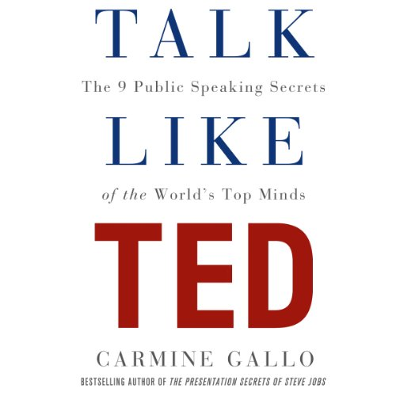

Library › Psychology & People
Talk Like TED — Summary & Key Lessons

The 9 public-speaking secrets of the world's top minds — analyzed from 500+ TED talks and the science of persuasion.
📖 OPEN THE FULL INTERACTIVE BREAKDOWN →🌐 Read it in Hindi, Hinglish, Gujarati, Tamil & 22 more languages — free, with audio.
💡 The Big Idea
Gallo analyzed hundreds of the most-viewed TED talks, interviewed their speakers, and cross-referenced neuroscience to extract nine secrets in three families: EMOTIONAL — unleash the master within (passion is contagious and audiences detect its absence instantly), master the art of storytelling (stories sync listener brains to yours), have a conversation (practice until delivery disappears); NOVEL — teach me something new (the brain is a novelty-seeking machine), deliver jaw-dropping moments (the emotionally charged event is the one memory keeps), use humor without telling jokes; MEMORABLE — stick to the 18-minute rule (cognitive load is real; constraint creates discipline), paint a mental picture with multisensory experiences, and stay in your lane (authenticity — the audience forgives almost anything except fake). The meta-lesson: presentation skill is no longer soft — 'ideas are the currency of the twenty-first century,' and the ability to sell yours publicly is the century's highest-leverage skill.
🧠 The 4 Key Lessons
Lesson 1: Passion and Practice: The Emotional Foundation
Secrets 1 & 3: Unleash the Master Within / Have a Conversation
Secret one: the great talks begin before technique — with a speaker genuinely, visibly LIT by the topic ('you can't inspire others unless you are inspired yourself'); Gallo's research trail: passion is neurologically contagious (mirror systems transmit the speaker's state), audiences rate passionate speakers as more competent AND more likable, and the practical question that unlocks it isn't 'what's my topic?' but 'WHAT MAKES MY HEART SING?' — the connection to the topic, not the topic, is what transmits (his tip: identify it, then make THAT the talk's spine). Secret three completes the emotional family: HAVE A CONVERSATION — the naturalness that reads as effortless is manufactured by rehearsal volume (the goal: internalize until the content frees you to be present); Gallo's mechanics: practice the verbal trio (rate, volume, pitch — varied deliberately), the nonverbal stack (gestures released, not choreographed; eye contact in sustained beats; power posture before AND during), and rehearse under observation (camera, friends, anyone) because the gap between felt delivery and observed delivery is where careers stall.
📖 Example: Gallo's passion exhibits: Aimee Mullins reframing prosthetic legs as 'wearable sculpture' and superpower — a talk carried entirely by her evident love of the possibility space; and neuroanatomist Jill Bolte Taylor, whose 'stroke of insight' became one of… Read the full example →
⚡ Do this: Find the heartbeat: write one paragraph answering 'what about my topic makes my heart sing?' — and restructure your next talk around THAT sentence. Then buy the naturalness: rehearse the open and close ten times each, once on camera, once before a live human — and fix the one verbal and one physical habit the camera exposes.
Lesson 2: Story Is the Operating System
Secret 2: Master the Art of Storytelling
The load-bearing secret: STORIES are not decoration on ideas — they're the delivery vehicle the brain was built for; Gallo's science stack: narrative synchronizes listener brains with the speaker's (Uri Hasson's neural-coupling studies: the storyteller's and listener's brains firing in matched patterns), stories dissolve counterargument (analytical claims summon analytical resistance; narrative slips beneath it), and emotionally charged events get the amygdala's memory stamp that bullet points never receive. His taxonomy of the three story types that work: PERSONAL stories (the speaker's own scars — the most powerful and the most avoided; vulnerability reads as courage and creates connection no credential can), stories about OTHER PEOPLE (case studies with names, faces, and stakes — the customer transformed, the patient saved), and BRAND/mission stories (the organization's journey told with a protagonist). The craft rules: specific beats general (the brain sees 'a rusted red bicycle', not 'transportation equipment'), struggle is mandatory (stories without adversity are announcements), and the 65% benchmark — Gallo's analysis of top talks found roughly two-thirds STORY, a quarter explanation, and a sliver of statistics: invert that ratio and you've built a memo with a stage.
📖 Example: Bryan Stevenson is Gallo's masterclass: the civil-rights lawyer's TED talk — which earned the conference's longest standing ovation and, notably, drew record donations — spends its opening not on the justice system's statistics but on his GRANDMOTHER (the… Read the full example →
⚡ Do this: Audit your current deck: compute the story-to-data ratio honestly, then rebuild toward 65/25/10. Bank your three signature stories (one scar, one customer, one mission) — written with specifics: names, objects, weather, stakes. Open your next talk with one; save the statistics for the seasoning.
Lesson 3: Novelty, Awe & Laughter: The Twitter Test and the Jaw-Drop
Secrets 4–6: Teach Me Something New / Jaw-Dropping Moments / Lighten Up
The novel family. TEACH SOMETHING NEW: the brain is a novelty engine — dopamine releases for genuinely new information, and attention follows it; Gallo's disciplines: find the unfamiliar angle on the familiar topic, package the idea to pass the TWITTER TEST (expressible in 140 characters — if you can't headline it, you don't yet have it), and give the audience one 'holy cow' fact per talk (the statistic so surprising it gets retold at dinner — retelling being the actual metric). JAW-DROPPING MOMENTS: engineer the single emotionally charged event the talk will be remembered by — the prop, the demonstration, the reveal — because memory keeps the peak, not the average. HUMOR: the trust accelerant — but never joke-telling (imported jokes read as performance); Gallo's sources: observational asides, self-deprecation (the highest-status humor: only the secure mock themselves), understatement, and funny STORIES from the material itself — laughter lowering defenses precisely when the hard idea needs entry.
📖 Example: The jaw-drop hall of fame: Bill Gates releasing live mosquitoes into the TED audience ('there's no reason only poor people should have the experience') — a malaria statistic no one remembers converted into a moment no one forgets; Jill Bolte Taylor producing… Read the full example →
⚡ Do this: Write your talk's tweet FIRST — the whole idea in one sharable line; if it won't compress, sharpen the idea, not the slide. Then engineer one jaw-drop (prop, live demo, shocking stat, reveal) and place it deliberately. Mine your material for two self-deprecating beats — never import a joke.
Lesson 4: 18 Minutes, Multisensory, and Ruthlessly Yourself
Secrets 7–9: Stick to the 18-Minute Rule / Paint a Mental Picture / Stay in Your Lane
The memorable family. THE 18-MINUTE RULE: TED's constraint is cognitive science in policy form — listening is metabolically expensive (attention decays hard past the quarter-hour), and the limit forces the discipline great communication requires ('constrained' talks demand the message hierarchy bloated ones never build); Gallo's structure for the space: ONE headline idea supported by a RULE OF THREE architecture (three stories, three points, three parts — the brain's native chunk size). PAINT PICTURES: multisensory delivery — visuals that are IMAGES rather than text walls (picture superiority: information heard is retained in fractions; add a picture and retention multiplies), demonstrations that let the audience feel, and language that engages senses ('the brain does not distinguish vividly imagined from experienced'). STAY IN YOUR LANE: the closing secret is a warning — audiences run world-class authenticity detection; the borrowed persona, the performed gravitas, the vocabulary that isn't yours all register as OFF within minutes, and no technique survives the verdict ('if you try to be something you're not, you will fail to gain the trust of your audience'). The nine secrets' synthesis: master the craft precisely so that what's left on stage is, finally, just you — amplified.
📖 Example: The 18-minute constraint's champion: the most-viewed TED talks cluster under the limit, and Gallo notes presidents and CEOs now request the format ('the 18-minute keynote') — the constraint outperforming the hour it replaced. Picture superiority's exhibit is… Read the full example →
⚡ Do this: Cut your next talk to 18 minutes flat — build it as one tweet-sized headline over three chunks. Redesign the slides: one idea per slide, image-first, text demoted to captions. And run the lane check: read your script aloud — every sentence you'd never SAY in conversation gets rewritten in your own voice. The you that remains is the talk.
✅ 5-Step Action Plan
- Find the heartbeat paragraph; rehearse open and close ten times each.
- Bank three signature stories; rebuild decks toward the 65% story ratio.
- Write the tweet first; engineer one jaw-drop; mine two self-deprecating beats.
- Cut to 18 minutes; one image-first idea per slide; rule of three.
- Run the lane check — rewrite every sentence you wouldn't actually say.
💬 Best Quotes from Talk Like TED
- “Ideas are the currency of the twenty-first century.”
- “The single most important thing you can do to dramatically improve your presentations is to have a story to tell.”
- “If you can't explain your big idea in 140 characters or less, keep working on your message.”
Interactive version: mark lessons as read, listen in your language, share quote cards.